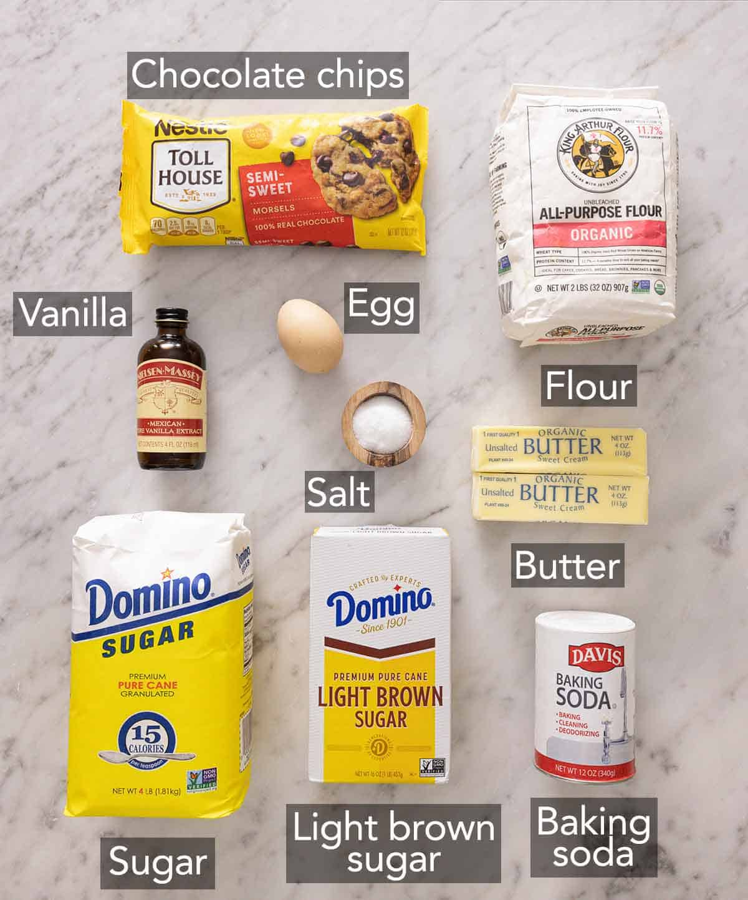

Chocolate Chip Cookies

A delicious home made chocolate chip cookies
Recipe Ingredients:
- Butter — when purchasing butter to make these cookies, be sure to buy unsalted butter and not salted butter. Salted butter does not have a consistent amount of salt, so it’s best for you to add your own, or you might have an overly salty cookie. Also, make sure the butter is at room temperature, which means it’s soft enough so when you press into it, your finger leaves a dent. If it’s cold, it’ll be difficult to cream it.
- Sugar — I use both white and brown sugar. White sugar adds sweetness and structure whereas brown sugar adds color and a delicious caramelized flavor. Brown sugar also contributes to keeping the cookies soft in the center.
- Baking soda — make sure your baking soda is not expired. Do not swap for baking powder as it will make the cookies taste cakey.
- Chocolate Chips — You could also use milk chocolate chips, dark chocolate, or cut a bar into chocolate chunks.
- 1 tablespoon vanilla extract
- 2 pinches salt
- 3 eggs
- ¾ cup milk
- ¾ cup vegetable oil
Instructions:
In a medium bowl, whisk together flour, baking soda, and salt.
In the bowl of a stand mixer with the paddle attachment, combine butter and sugars.
Beat at medium-low speed until very light and fluffy.
Add egg and vanilla. Beat until well combined, scraping down the sides of the bowl.
With the mixer on low, gradually add the flour mixture with your measuring cup. Beat until just combined.
Stir in the chocolate chips.
Using a 1½ tablespoon scoop, scoop the dough into balls and place them on a lined sheet pan. Freeze dough balls for 30 minutes, or cover and refrigerate for 12 to 36 hours.
When ready to bake, line two baking sheets and transfer the dough over. Press on extra chocolate chips and then bake for 10 to 12 minutes or until the edges are golden brown. Let cookies cool on the cookie sheet for 5 to 10 minutes. Finish cooling on a wire rack.